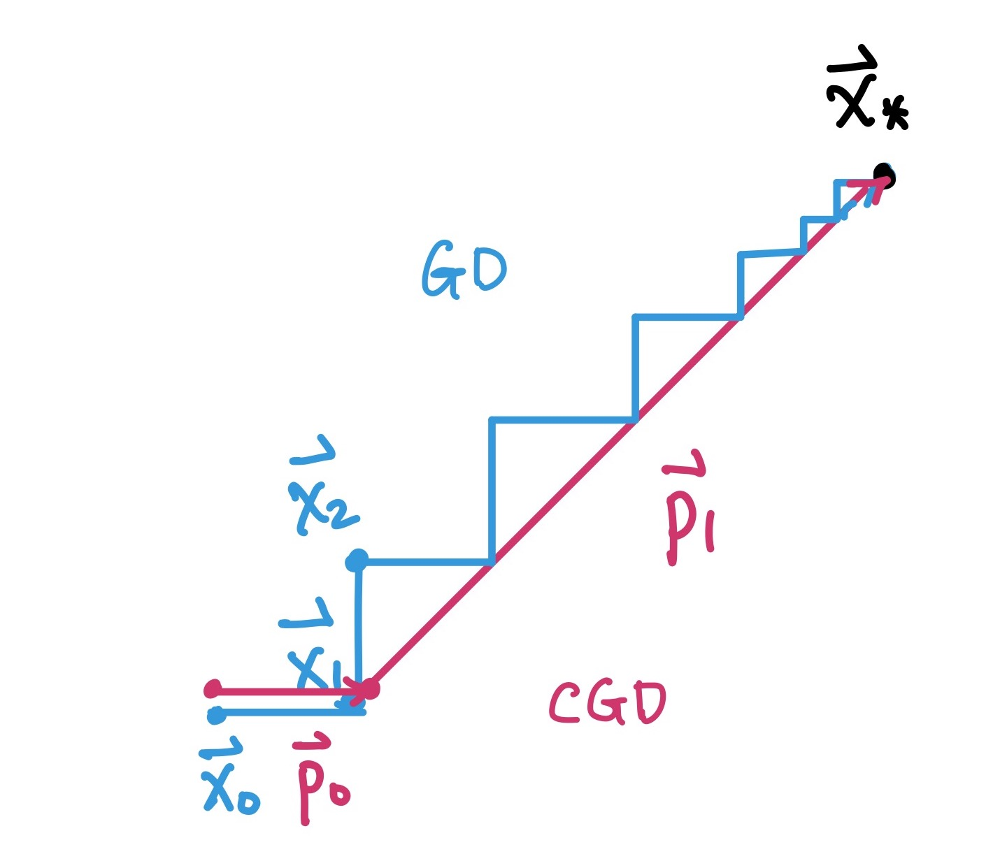

Iterative Methods for Solving Linear Systems (2)
Contents
Iterative Methods for Solving Linear Systems (2)#
We have introduced 3 iterative methods (Jacobi, Gauss-Seidal, SOR) to solve linear system \(A\vec x=\vec b\) by splitting \(A\) into \(A=N-P\), resulting an iterative scheme
Matrix splitting, as we have discussed, is one approach to construct an iterative scheme. Alternatively, there is another novel approach to get an iterative scheme to solve \(A\vec x=\vec b\), which requires us to look at the problem from another perspective – energy minimization.
Energy Minimization#
Consider a linear system \(A\vec x=\vec b\), where \(A\in M_{n\times n}(\mathbb R)\) is a symmetric positive definite matrix. Then solving \(A\vec x=\vec b\) is equivalent to minimize the “energy” function
The iterative scheme built upon the energy minimization approach looks for a sequence of \(\vec x_{0},\vec x_{1},\cdots,\vec x_{k},\cdots\) to approximate the minimizer of the “energy” function \(f\), that is:
such that \(f(\vec x_{0})>f(\vec x_{1})>\cdots>f(\vec x_{k})>\cdots\) until convergence.
In each iteration, \(\alpha_k \in \mathbb R, \alpha_k>0\) is called the time step, and \(\vec p_k\in \mathbb R^n\) is called the search direction. There are various choices of \(\alpha_k\) and \(\vec p_k\). In this chapter we will focus on three sets of them, namely Gradient Descent Method, Steepest Descent Method, and Conjugate Gradient Method.
Gradient Descent Method#
Suppose \(A\in M_{n\times n}(\mathbb R)\) is a symmetric positive definite matrix. Then, for the energy function \(f(\vec x)=\frac{1}{2} \vec x^T A\vec x-\vec b^T\vec x\), the gradient is \(\nabla f(\vec x)=A\vec x-\vec b\), and the Hessian is \(Hf=A\).
In gradient descent, we assume a fixed time step \(\alpha>0\):
so now we are looking into the search direction \(\vec p_k\).
Taylor expansion at \(\vec x^{(k+1)}\) gives
If \(\alpha\) is small enough, then we can choose
Algorithm 1 (Gradient Descent Method)#
Goal: solving \(A\vec x=\vec b\) for SPD matrix \(A\).
Initilize \(\vec x_0\in \mathbb R^n\), \(\vec p_0=-(A\vec x_{0}-\vec b)\).
For \(k=0,1,2,\cdots\), repeat until convergence
\(\vec x_{k+1}=\vec x_{k}+\alpha\vec p_k\);
\(\vec p_k=-(A\vec x_{k}-\vec b)\).
Convergence analysis of Gradient Descent Method#
We need to choose appropriate \(\alpha\) to ensure the convergence of the Gradient Descent Method.
Let \(A\) be an SPD matrix with eigenvalues \(\lambda_1\geq\cdots\geq\lambda_n\). And let \(\vec x^*\) be the solution of \(A\vec x=\vec b\), then we have
Also, from the iteation,
Using \((2)-(1)\), we get
Obviously, the convergence of the iterative scheme depends on \(\rho (I-\alpha A)\). To ensure the convergence, we need \(\rho (I-\alpha A)<1\). Note that the eigenvalues of \((I-\alpha A)\) are \(1-\alpha\lambda_1,1-\alpha\lambda_2,\cdots,1-\alpha\lambda_n\), so
In practice, we often choose \(\alpha=1/\lambda_{max}\), where \(\lambda_{max}\) can be founded by the Power method in the chapter (Eigenvalue Problem).
Beyond this, the convergence of the Gradient Descent Method is actually depending on the condition number \(\kappa(A)\) of matrix \(A\), where \(\kappa(A)=\lambda_{max}/\lambda_{min}\). Note that
Therefore, the Gradient Descent Method converges iff
The convergence depends on the condition number. If the condition number is BIG, then the convergence is SLOW.
Steepest Descent Method#
The Gradient Descent Method uses a fixed time step \(\alpha\), but we can also construct an iterative scheme for \(\alpha_k\) to obtain a faster convergence, leading to the Steepest Descent Method we are discussing here.
Steepest Descent Method updates the search direction in the same way as the Gradient Descent Method
but the whole iterative scheme
is different because we update \(\alpha_k\) in each iteration as well.
In \(k\)-th iteration, given \(\vec p_k= -\nabla f(\vec x_{k})=-(A\vec x_{k}-\vec b)\), we want to find an optimal \(\alpha_k\) such that
That is, we do a line search for \(\alpha\) to find the optimal \(\alpha_k\) that can minimize \(f(\vec x_{k+1})\) in \(k\)-th iteration. In other words, given a search direction \(\vec p_k\), time step \(\alpha_k\) is the best choice to approximate \(\min f(\vec x)\). Now we solve for \(\alpha_k\). At the critical point, the gradient equals to zero, that is
Note that in the Steepest Descent Method, each contiguous steps are orthogonal to each other, i.e.
Algorithm 2 (Steepest Descent Method)#
Goal: solving \(A\vec x=\vec b\) for SPD matrix \(A\).
Initilize \(\vec x_0\in \mathbb R^n\), \(\vec p_0=-(A\vec x_{0}-\vec b),\alpha_0=-\frac{\vec p_0\cdot \vec p_0}{\vec p_0\cdot A\vec p_0}\).
For \(k=0,1,2,\cdots\), repeat until convergence
\(\vec x_{k+1}=\vec x_{k}+\alpha_k\vec p_k\);
\(\vec p_k=-(A\vec x_{k}-\vec b)\);
\(\alpha_k=-\frac{\vec p_k\cdot \vec p_k}{\vec p_k\cdot A\vec p_k}\).
Conjugate Gradient Method#
The “zig-zag” iterative scheme in Steepest Descent Method causes inefficiency. Alternatively, Conjugate Gradient Method can give “direct” convergence to the minimizer. Here is an example to illustrate the motivation behind the Conjugate Gradient Method.
Consider an SPD matrix \(A\in M_{2\times 2}(\mathbb R)\), let \(\vec x^*\) be the solution of \(A\vec x=\vec b\). The energy function is \(f(\vec x)=\frac{1}{2} \vec x^T A\vec x-\vec b^T\vec x\).

In the 2-dim plane, Steepest Descent Method approximates \(\vec x^*\) via the blue line, which is a really long-winded road. Conjugate Gradient Method, however, behaves greedily as illustrating in the pink line. From the initial position \(\vec x_0\), given the first step \(\vec p_0\), we want to go to the solution \(\vec x^*\) directly in 1 step via \(\vec p_1\). Suppose this is true, then we can write \(\vec p_1=c(\vec x^*-\vec x_1)\). Note that \(A\vec p_1=c(A\vec x^*-A\vec x_1)=c(\vec b-A\vec x_1)\), then
because \(\alpha_0\) is chosen to be optimal. The relationship
motivates us to choose the search direction in each step. In this way, our algorithm will converges in only 2 iterations.
Now we are ready to discuss the Conjugate Gradient Method. But before that, let us re-visit some important definitions.
(Definition 1) We say that the set of directions \(\{\vec p_j\}_{j=0}^{k-1}\) is a conjugate set of directions with respect to \(A\) if
(Definition 2) Given an SPD matrix \(A\in M_{n\times n}(\mathbb R)\) and two vectors \(\vec u, \vec v\in \mathbb R^n\). We define the dot product of \(\vec u, \vec v\) with respect to \(A\) to be
The goal of Conjugate Gradient Method is to find
Search direction \(\vec p_j(j=0,1,2,\cdots)\) such that \(\vec p_j^T A \vec p_i=0\) for \(i\neq j\).
Time step \(\alpha_k\) to be optimal.
The Choice of Time Step \(\alpha_k\)#
Firstly, we look at the choice of time step \(\alpha_k\), given \(\vec p_0,\vec p_1,\cdots,\vec p_k\). This is similar to the discussion in the Steepest Descent.
In \(k\)-th iteration, we want to find an optimal \(\alpha_k\) such that
Therefore,
where we define the residual
The Choice of Search Direction \(\vec p_k\)#
Secondly, we look at the choice of the search direction \(\\vec p_k\), given \(\vec p_0,\vec p_1,\cdots,\vec p_k\).
Let
where \(\vec r_k=-\nabla f(\vec x_{k})\) is the search direction in the Steepest Descent (negative gradient), and \(\beta_{k-1}\) is the “time step” of \(\vec p_k\) that ensure \(\vec p_{k-1}^T A \vec p_k=0\). To find out \(\beta_{k-1}\), observe that
so
which implies
Now we can formulate the whole procedure of the Conjugate Gradient Method.
Algorithm 3 (Conjugate Gradient Method)#
Goal: solving \(A\vec x=\vec b\) for SPD matrix \(A\).
Initilize \(\vec x_0\in \mathbb R^n\), \(\vec p_0=-\vec r_0=-(A\vec x_{0}-\vec b),\alpha_0=-\frac{\vec p_0\cdot \vec p_0}{\langle\ \vec p_{0},\vec p_{0} \rangle_{A}}\).
For \(k=0,1,2,\cdots\), repeat until convergence
Time step \(\alpha_k =-\frac{\vec r_k\cdot \vec p_k}{\langle\ \vec p_k, \vec p_k \rangle_{A}}\) where \(\vec r_{k}=-(A\vec x_{k}-\vec b)\);
\(\vec x_{k+1}=\vec x_{k}+\alpha_k\vec p_k\);
Search direction \(\vec p_{k+1}=-\vec r_{k+1}-\beta_{k}\vec p_{k}\) where \(\vec r_{k+1}=-(A\vec x_{k+1}-\vec b)\) and \(\beta_{k}=\frac{\langle\ \vec r_{k+1},\vec p_{k} \rangle_{A}}{\langle\ \vec p_{k},\vec p_{k} \rangle_{A}}\)
Theorem 1: Orthogonal Residuals and Conjugate Directions#
With the iterative scheme in the Conjugate Gradient Method, define \(\vec r_{k}=-(A\vec x_{k}-\vec b)\) in \(k\)-th iteration, then
(1) \(\vec r_i^T\vec r_j=0\ ,\forall i\neq j\). (All the residuals are orthogonal to each other.)
(2) \(\langle\ \vec p_i, \vec p_j \rangle_{A}:=\vec p_i^TA\vec p_j=0\ ,\forall i\neq j.\) (All the search directions are conjugate to each other.)
Proof by induction.
Lemma: \(Span\{\vec p_0,\cdots,\vec p_{k-1}\}=Span\{\vec r_0,\cdots,\vec r_{k-1}\}\).
For \(i,j\leq 1\),
(1) \(\vec r_0^T\vec r_1=0\) is true because
(2) \(\langle\ \vec p_0, \vec p_1\rangle_{A}=0\) is true by definition.
Suppose the statements (1)(2) are true for \(i,j\leq k\). Want to prove:
\(\vec r_{k+1}^T\vec r_j=0\) for all \(j=0,1,\cdots,k\).
\(\langle\ \vec p_{k+1}, \vec p_j \rangle_{A}=\vec p_{k+1}^TA\vec p_j=0\) for all \(j=0,1,\cdots,k\).
First we look at (1).
Now, for \(j=0,1,\cdots,k-1\):
Since \(Span\{\vec p_0,\cdots,\vec p_{j}\}=Span\{\vec r_0,\cdots,\vec r_{j}\}\), so \(\vec r_k^T\vec p_j=0\) (by induction hypothesis, \(\vec r_k^T\vec r_i=0\) for \(i=0,1,\cdots,j\)).
Note that
we have
Also, \(\vec r_{k+1}^T\vec p_k=0\) because
All together, we have
Since \(Span\{\vec p_0,\cdots,\vec p_{k}\}=Span\{\vec r_0,\cdots,\vec r_{k}\}\), easy to show
So (1) is true for the case \((k+1)\).
Secondly, we want to show that (2) is true for \((k+1)\).
Consider \(j=0,1,\cdots,k-1\).
Note that \(\vec r_{j+1}=\vec r_{j}+\alpha_j A\vec p_j\), so \(A\vec p_j\in Span\{\vec r_{j+1},\vec r_{j}\}\). Then
For \(\vec p_{k+1}=-\vec r_{k+1}-\beta_{k}\vec p_{k}\), we have
Also, \(\vec p_{k+1}^TA\vec p_k=0\) be definition.
All together, we have
So (2) is true for the case \((k+1)\).
By mathematical induction, (1)(2) is true.
Theorem 2: CG Method Converges in \(n\) steps#
Consider the iterative scheme in the CG Method to solve \(A\vec x=\vec b\), where \(A\in M_{n\times n}(\mathbb R)\) is SPD: $\( \vec x_{k+1}=\vec x_{k}+\alpha_k\vec p_k,\qquad k=0,1,2,\cdots \)$
Suppose that \(\{\vec r_k=A\vec x_k-\vec b\}_{k=0}^{\infty}\) are orthogonal to each other (i.e.\(\vec r_i^T\vec r_j=0\ ,\forall i\neq j\)). Then, the iterative scheme coverges to the solution of \(A\vec x=\vec b\) in less than or equal to \(n\) iterations.
Proof by contradiction.
Assume that \(\vec r_0,\vec r_1,\cdots,\vec r_n\) are all non-zero. Then \(\{\vec r_0,\vec r_1,\cdots,\vec r_n\}\) forms an orthogonal and linearly independent set in \(\mathbb R^n\). Since there are \((n+1)\) elements in \(\{\vec r_0,\vec r_1,\cdots,\vec r_n\}\), it is impossible.
So there must be \(\vec r_i=A\vec x_i-\vec b=\vec 0\) for some \(i\leq n\). Here this \(\vec x_i\) is the solution of \(A\vec x=\vec b\). Therefore, the iterative scheme coverges in \(i\leq n\) iterations.